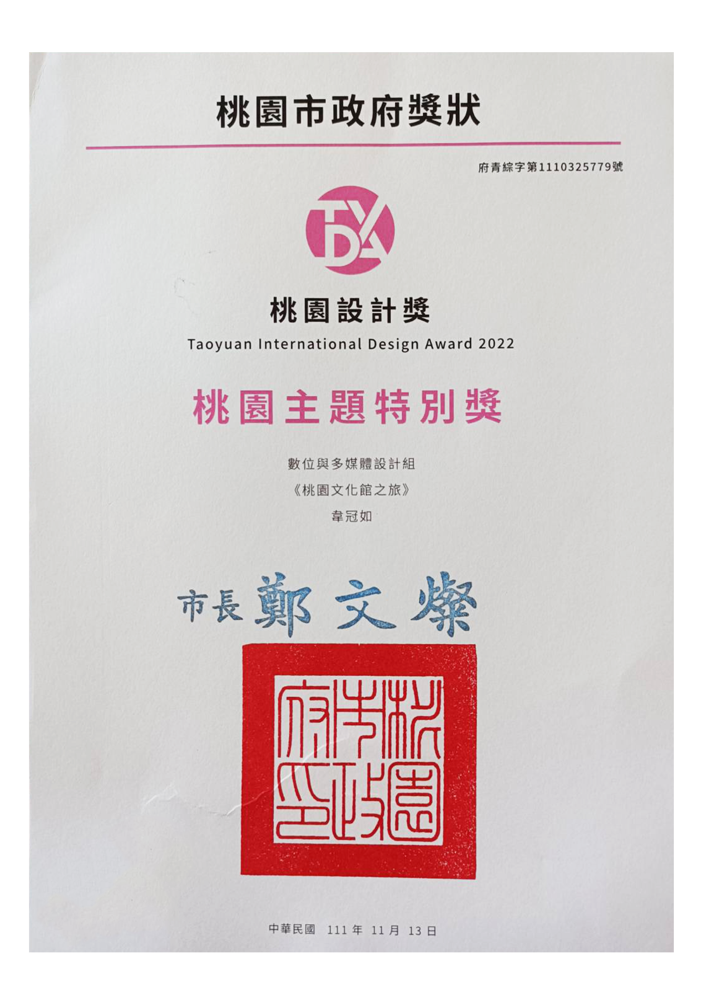

自傳
我是韋冠如，家庭帶給我的影響是做一個正直的人並堅持做正確的事情、不怠惰。自幼時就喜愛創作， 喜歡自己做各式各樣的東西，比如長頸鹿身高尺、襪子的家和筆帶，喜歡思考和設計的過程，更喜歡看到成品並且能夠實際應用在生活中， 有時姊姊及妹妹也會一同加入製作，各司其職，不僅增加我們之間的情感也學會團隊合作，此外，我亦喜愛運動和旅遊，運動不僅能維持身材， 亦能使我精神更好，而旅遊則能讓我開拓視野，增廣見聞。 高中本想就讀設計系的我遭父母阻攔，只好就讀普通高中，高中畢業後迷失自我， 因此只好先選擇就業，於巨匠任職期間，接觸到設計領域，像是平面設計、影音剪輯以及概略的網頁設計，了解到行銷設計亦是一個不錯的職業， 於是決定重返校園，進入聯合大學文創與數位行銷系就讀，就讀期間修習諸多設計課程和行銷課程，除了學習知識外，學校的會議及報告，讓我更 能夠表達自己想闡述的事情，而擔任組長的過程中，亦大致了解該如何協調組員間的工作及舒緩氣氛。 為了更精進自己的技術和證明自己， 除了練習和致力創作作品外，去年春季時，考取了網頁設計丙級執照，並於前年夏季投稿桃園設計獎，主題為桃園文化館之旅(使用figma做UI設計)， 亦獲得了多媒體與互動設計組的桃園特別設計獎，成功利用遊戲網站行銷桃園文化館，於製作專題方面躍上日本的研討會，取得證書， 是關於浪貓咖啡的品牌設計。此外，在聯合大學工作期間負責美編行銷、接待客戶和處理公文，美編行銷方面，包括製作招生文宣(招生dm)、 製作活動海報、設計活動周邊商品、架設光電系網站和剪輯招生影片和實驗室介紹影片，以塑立光電系品牌形象-永續和先進的科技教學單位。 因對設計和行銷的熱愛，希望自己可以在未來從事相關職業，並且持續精進自己的能力，(比如多去看展，讓自己可以發揮設計和行銷專長， 創造出更多吸引人們使用並美觀的網站和文案內容，同時也創造更多自己的價值。
經歷、技能與證書
巨匠班務
負責製作海報、布置活動場景、處理學生與老師事宜、課程介紹與招生
1.成功簽約5位舊生
2.獲得區域服務最佳獎
3.海報及廣宣品成功吸引學員來參加活動

多益645分

桃園主題特別獎

網頁設計丙級
日本研討會證書